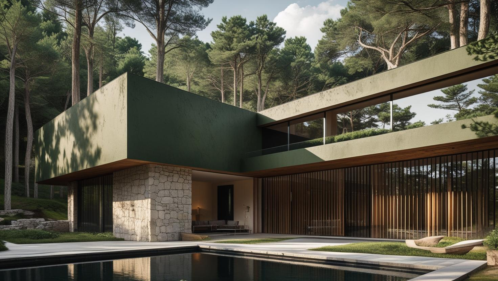

Beyoğlu'nun Profesyonel Boya Ustası
20 yıllık tecrübemizle Beyoğlu'nda yüksek tavanlı eski dairelerde ve kafe, dükkân, otel gibi ticari mekânlarda iç ve dış cephe boyama yapıyoruz. Eski sıvanın ve yıpranmış boya katmanlarının durumunu keşifte yerinde görüyoruz.
Beyoğlu'nda Boya Badana: Tarihi Yapı Stoğu ve Ticari Mekânlar
Beyoğlu boyacı talebi ilçenin tarihi dokusundan ve yoğun ticari hayatından şekilleniyor. Cihangir, Galata ve Çukurcuma çevresinde yüksek tavanlı eski apartmanlar; İstiklal ve çevresinde ise kafe, restoran, otel ve dükkân yoğunluğu var.
Eski yapıda tavanlar yüksek, sıva kalın ve üzerinde yıllarca birikmiş katmanlar bulunuyor. Bu dairelerde iş raspa ve düzeltmeyle başlıyor; ayrıca yüksek tavan boyanacak yüzey alanını zemin metrekaresinin ötesine taşıyor.
Ticari mekânlarda öncelik işletmenin kapalı kalmaması. Beyoğlu boya ustası işlerinde çalışmayı kapanış sonrasına, geceye ya da hafta içi sakin günlere alabiliyoruz. Dar sokaklarda park ve malzeme taşıma planın gerçek bir kalemi.
Beyoğlu Boya Hizmetlerimiz

İç Mekan Boyama
Cihangir, Çukurcuma ve Galata'daki eski dairelerde boyaya, kabaran katmanlar temizlenip sıva çatlakları kapatıldıktan sonra geçilir. Yüksek tavanlarda platformla çalışılır; tavan göbeği ve kartonpiyer gibi detaylar ayrıca ele alınır.
- Eski katman raspası ve sıva tamiri
- Yüksek tavan ve kartonpiyer boyama
- Ahşap kapı ve pencere kasası boyama
- Eşyalı dairede oda oda uygulama

Dış Cephe Boyama
Tarihi merkezdeki cephe işleri genellikle dar sokağa bakan, bitişik nizam kagir binalarda yapılır; iskelenin nereye kurulacağı ve kaldırımın nasıl kullanılacağı işin başında netleşir. Tescilli yapılarda renk ve malzeme seçimi izin sürecine göre belirlenir.
- Kagir cephede çatlak ve derz onarımı
- Nefes alan cephe boya sistemi
- Cumba ve pencere söve boyama
- İskele ve kaldırım planlaması

Dekoratif Boyama
Kafe, restoran ve butik otellerde vurgu duvarı, taş veya tuğla efekti ve kurumsal renk uygulamaları yapıyoruz. Eski dairelerde ise yüksek tavanın ışığını dengeleyen, duvar ve tavan detaylarını öne çıkaran renk seçenekleri öneriyoruz.
- Kafe ve restoran vurgu duvarları
- Taş ve tuğla efektli uygulama
- Vitrin ve tabela çevresi boyama
- Işığa göre renk ve doku önerisi
Beyoğlu Boya Fiyatları
| Hizmet Türü | Metrekare Fiyatı | Ortalama Süre (100m²) | Garanti |
|---|---|---|---|
| İç Cephe Boyama | 100-200 TL | 2-3 Gün | Uygulama kapsamına göre |
| Dış Cephe Boyama | 180-280 TL | 3-5 Gün | Uygulama kapsamına göre |
| Dekoratif Boyama | 250-500 TL | 4-7 Gün | Uygulama kapsamına göre |
| Ofis Boyama | 150-250 TL | 2-4 Gün | Uygulama kapsamına göre |
| Badana İşleri | 80-150 TL | 1-2 Gün | Uygulama kapsamına göre |
Metrekare fiyatları yaklaşık ön değerlendirme aralığıdır. Uygulanacak ölçüm yöntemi, boyanacak alanın kapsamı, yüzey durumu, tamirat ihtiyacı, kat sayısı ve malzeme seçimi keşif sırasında netleştirilir.
Dış cephe boya fiyatları uygulama alanı için yaklaşık 180–280 TL/m² aralığındadır. Kesin hesaplama yöntemi ve teklif; yüzey durumu, bina yüksekliği, erişim veya iskele ihtiyacı, tamirat kapsamı, boya sistemi ve uygulanacak kat sayısına göre keşif sırasında netleştirilir.
Bu rakamlar İstanbul Boyacılık'ın 2026 gösterge fiyat aralığıdır. Bir piyasa ortalaması değildir. Kesin fiyat; yüzey durumu, hazırlık ve tamirat miktarı, uygulanacak kat sayısı, seçilen malzeme sınıfı, ulaşım ve kat koşulları ile evin eşyalı mı boş mu olduğu keşifte görüldükten sonra belirlenir.
Beyoğlu'nda aralığı yukarı taşıyan kalemler yüksek tavan nedeniyle artan yüzey alanı, eski katmanların raspası ve dar sokaklarda park/taşıma kısıtı. Ticari mekânlarda ise kapanış sonrası ve gece çalışma belirleyici oluyor.
Cihangir, Galata ve Tarlabaşı'ndaki Eski Binalarda Boya Öncesi Hazırlık
Eski binada boyanın ne kadar dayanacağını, uygulamadan önce sıvanın ve alttaki katmanların ne durumda olduğu belirler. Bu yüzden keşifte önce yüzeye, sonra renge bakıyoruz.
Beyoğlu, Cihangir'in dar sokaklarındaki eski apartmanlardan Karaköy'ün dönüşüm yapılarına ve Tarlabaşı restorasyon projelerine uzanan tarihi bir konut dokusu taşır. Asansörsüz binalarda malzeme taşıması ve eski sıvalı yüzeylerin hazırlığı; Beyoğlu boyacı ustası olarak bu zorlukları deneyimle ve ekip koordinasyonuyla aşıyoruz.
Ücretsiz keşif: yüzey, nem izi ve malzeme taşıma yolu yerinde görülür.
Yazılı teklif: raspa, tamirat ve boya kalemleri kapsamıyla birlikte belirtilir.
Uygulama kapsamına göre işçilik garantisi sağlanır. Garanti kapsamı ve istisnaları teklif veya iş sözleşmesinde belirtilir.
Eski dairelerde sık karşılaşılan durum, yıllar içinde üst üste sürülmüş boyaların alttaki yüzeye tutunmasını kaybetmesidir. Bastırınca kabaran ya da pul pul kalkan bir yüzeye yeni kat sürmek sorunu yalnızca örter; bu bölgeler kazınır, sıva boşlukları doldurulur ve yüzey astarlanır. Kabarmanın olası nedenlerini boyanın neden kabarcık yaptığını anlatan rehberimizde ayrıntılı bulabilirsiniz.
- Kalın ve eski sıva: çatlaklar açılıp doldurulur; çok emici yüzeylerde astar katı artırılabilir.
- Tavan göbeği ve kartonpiyer: kırık parçalar onarılır, detaylar fırçayla ayrı boyanır.
- Ahşap kapı ve pencere kasaları: eski yağlı boyanın üzerine su bazlı boyaya geçmeden önce zımpara ve uygun astar gerekir.
Beyoğlu'nda Kafe, Restoran ve Butik Otel Boyamasında Malzeme Seçimi
Ticari mekânda boya seçimi, duvarın ne sıklıkla silineceğine ve mekânın ne zaman yeniden müşteri alacağına göre yapılır. Aynı işletmenin salonu ile mutfağı farklı yüzey dayanımı isteyebilir.
- Mutfak ve servis alanı: yağ ve buhar alan duvarlarda sık silmeye dayanıklı, yıkanabilir boyalar tercih edilir.
- Salon ve bar önü: sandalye sırtı ve omuz hizasında kolay temizlenen yarı mat yüzeyler kullanışlıdır.
- Otel ve pansiyon odaları: boş odalardan başlanır, kokunun dağılması için havalandırma süresi plana eklenir.
- Vitrin ve cephe: tabela, tente ve vitrin çerçevesi çevresindeki işler yaya yoğunluğunun azaldığı saatlere alınır.
Metrekare ve kapsamın iş yeri fiyatına nasıl yansıdığını dükkân ve iş yeri boyama fiyatları rehberimizde görebilirsiniz. Ofis ve dekoratif uygulamaların güncel metrekare aralıkları bu sayfadaki fiyat tablosunda yer alıyor.
Tescilli Binada Cephe ve Merdiven Boşluğu Boyatmadan Önce Netleşmesi Gerekenler
Cephe ya da ortak alan boyası, bina yönetimi ve gerektiğinde resmi kurumlarla birlikte planlanan bir iştir. İzinler netleşmeden iskele kurmak veya renk seçmek işi yarıda durdurabilir.
- Kat malikleri kararı: dış cephe ve merdiven boşluğu ortak alan sayıldığı için genellikle yönetim planına göre kat maliklerinin onayı aranır.
- Tescil ve koruma durumu: tescilli ya da koruma alanındaki binalarda cephe rengi, sıva ve doğrama müdahaleleri için ilgili kurumdan onay istenebilir.
- İskele ve kaldırım kullanımı: dar sokakta iskele kaldırımı kapatacaksa belediyeden izin alınması gerekebilir.
- Zemin kattaki işletmeler: dükkân girişlerinin ve vitrinlerin iş boyunca nasıl açık kalacağı önceden konuşulur.
Bu adımları keşiften önce yönetimle konuşmanız, teklifte iskele ve koruma kalemlerinin eksiksiz yazılmasını sağlar.
Kasımpaşa, Hasköy ve Sütlüce'de Haliç'e Yakın Dairelerde Nem İzi
Haliç kıyısındaki semtlerde keşifte ilk baktığımız konulardan biri nem izi ve küf lekesidir. Suya yakın, az güneş alan ve zemine yakın katlardaki dairelerde bu lekelere daha sık rastlanabilir.
Nem lekesi boyayla kapatıldığında, kaynağı sürdüğü sürece yeniden yüzeye çıkar. Keşifte lekenin tesisat kaçağına, yoğuşmaya ya da dış duvardan gelen neme benzeyip benzemediğini inceliyoruz; kaynak giderildikten sonra yüzey kurutulup temizleniyor ve uygun astarla boyanıyor. Yoğuşmadan kaynaklanan durumlarda odanın düzenli havalandırılması da sonucu doğrudan etkiler.
Beyoğlu’nda Hizmet Verdiğimiz Mahalleler
Keşif ve uygulama için gittiğimiz Beyoğlu mahalleleri, Galata ve Cihangir'in tarihi sokaklarından Haliç kıyısındaki Sütlüce ve Halıcıoğlu'na uzanıyor:
Beyoğlu Mahalleleri
- Beyoğlu Arapcami Mahallesi
- Beyoğlu Asmalı Mescit Mahallesi
- Beyoğlu Bedrettin Mahallesi
- Beyoğlu Bereketzade Mahallesi
- Beyoğlu Bostan Mahallesi
- Beyoğlu Bülbül Mahallesi
- Beyoğlu Camii Kebir Mahallesi
- Beyoğlu Cihangir Mahallesi
- Beyoğlu Çatma Mescit Mahallesi
- Beyoğlu Çukur Mahallesi
- Beyoğlu Emekyemez Mahallesi
- Beyoğlu Evliya Çelebi Mahallesi
- Beyoğlu Fetihtepe Mahallesi
- Beyoğlu Firuzağa Mahallesi
- Beyoğlu Gümüşsuyu Mahallesi
- Beyoğlu Hacıahmet Mahallesi
- Beyoğlu İstiklal Mahallesi
- Beyoğlu Hacı Mimi Mahallesi
- Beyoğlu Hüseyinağa Mahallesi
- Beyoğlu Kadı Mehmet Efendi Mahallesi
- Beyoğlu Kamerhatun Mahallesi
- Beyoğlu Kalyoncu Kulluk Mahallesi
- Beyoğlu Kaptanpaşa Mahallesi
- Beyoğlu Katip Mustafa Çelebi Mahallesi
- Beyoğlu Keçecipiri Mahallesi
- Beyoğlu Kemankeş Mahallesi
- Beyoğlu Kılıçali Paşa Mahallesi
- Beyoğlu Kocatepe Mahallesi
- Beyoğlu Kulaksız Mahallesi
- Beyoğlu Kuloğlu Mahallesi
- Beyoğlu Küçük Piyale Mahallesi
- Beyoğlu Müeyyetzade Mahallesi
- Beyoğlu Ömer Avni Mahallesi
- Beyoğlu Piripaşa Mahallesi
- Beyoğlu Piyalepaşa Mahallesi
- Beyoğlu Pürtelaş Mahallesi
- Beyoğlu Sururi Mahallesi
- Beyoğlu Sütlüce Mahallesi
- Beyoğlu Şahkulu Mahallesi
- Beyoğlu Şehit Muhtar Mahallesi
- Beyoğlu Tomtom Mahallesi
- Beyoğlu Yahya Kahya Mahallesi
- Beyoğlu Yenişehir Mahallesi
- Beyoğlu Halıcıoğlu Mahallesi
- Beyoğlu Örnektepe Mahallesi
Beyoğlu Boyacılık Müşteri Yorumları
"Beyoğlu’nda daire boyattık. Titiz, düzenli ve zamanında teslimat. Boya kokusu kalmadı bile. Herkese tavsiye ederim."
Cansu Erdem
Cihangir / Beyoğlu
"Ofisimizin duvarları yenilendi. Boyacılık kalitesi gerçekten üst düzeydi. Beyoğlu için profesyonel çözüm arayanlara öneriyorum."
Erhan Toprak
Galata / Beyoğlu
"Beyoğlu iç cephe boyası çok başarılı yapıldı. İşini iyi yapan nadir ustalardanlar. Ellerine sağlık."
Nihan Yıldız
Asmalımescit / Beyoğlu
Faydalı Bağlantılar
Beyoğlu boya badana planında fiyat hesabı, boya markası ve yakın ilçe seçeneklerini birlikte değerlendirmek için aşağıdaki rehberler kullanılabilir.
Beyoğlu Boyacı Arayanların Sorduğu Sorular
Beyoğlu'nda eski bir daire için boyacı teklifinde hangi kalemler yer almalı?
Eski dairede teklif yalnızca metrekare ve boya markasından oluşmamalı. Kabaran katmanların raspası, sıva ve çatlak tamiri, tavan ile kartonpiyer detayları, ahşap kasa boyası ve malzeme taşıma ayrı ayrı görülmelidir. Metrekare aralıkları sayfadaki fiyat tablosunda yer alır; kesin tutarı keşiften sonra yazılı olarak veriyoruz.
Otel veya pansiyon odalarını sezon içinde boyatmak mümkün mü?
Mümkün. İşe o gün boş olan odalardan başlıyor, odayı yeniden kullanıma açmadan önce havalandırma ve kuruma için zaman bırakıyoruz. Koridor ve lobi gibi ortak alanları misafir trafiğinin azaldığı saatlere alıyoruz; planı doluluk bilgisine göre keşifte birlikte hazırlıyoruz.
Cihangir veya Galata'daki eşyalı evimde boya yapılırken eşyalar nasıl korunuyor?
Dar merdivenli eski binalarda mobilyayı daireden çıkarmak çoğu zaman pratik olmadığı için eşyaları oda içinde toplayıp örtüyor ve oda oda ilerliyoruz. Ahşap zeminler, eski kapı kasaları ve pencere kenarları bantlanarak korunuyor; duvara sabit kitaplık veya vitrin gibi mobilyalar keşifte ayrıca konuşuluyor.
Kafemi kapatmadan boyatabilir miyim?
Çoğu durumda evet. Çalışmayı kapanış sonrasına, geceye ya da sakin günlere alabiliyoruz. Mutfak ve servis alanlarında hijyen gereği ek koruma uyguluyoruz; planı keşifte birlikte kuruyoruz.
Tarihi binada boya yaparken nelere dikkat ediyorsunuz?
Eski sıva ve ahşap detaylarda sert müdahaleden kaçınıyoruz; kabaran katmanı kontrollü temizleyip yüzeyin nefes almasını engellemeyen bir sistem tercih ediyoruz. Tescilli yapılarda izin ve uygulama kuralları ayrıdır; bunu iş sahibiyle önceden konuşuyoruz.
İstiklal çevresinde malzeme taşımak sorun mu?
Araç girişi kısıtlı olduğu için taşıma süresi uzuyor ve bu gün sayısına yansıyor. Keşifte adresi ve yükleme imkânını görüp planı buna göre kuruyoruz.
İletişim
İşletme merkezi: Orta, Demirkapı Cd. No:1, 34030 Bayrampaşa/İstanbul
İşletme merkezini Google Haritalar’da görüntüleyin
İletişim Bilgileri
Telefon: 0507 832 29 12
E-posta: boyaustamistanbul@gmail.com
10+ Uzman Ustamızla Beyoğlu ve çevresine hizmet veriyoruz.
Çalışma Saatleri: 7/24 (Pzt-Paz 00:00-23:59)